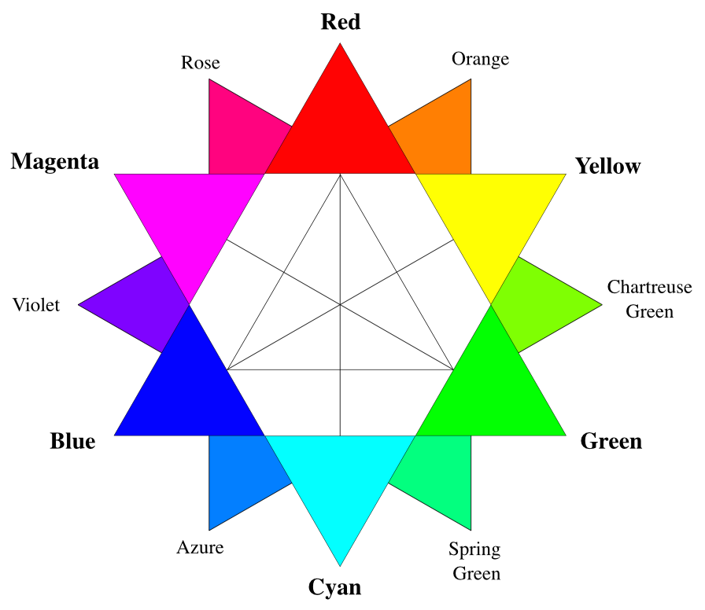

Home
Colors
This page displays colors for the
RGB color model
, which is an
additive color
model. 
Primary Colors
Secondary Colors
Formed by the addition of primary colors.
Tertiary Colors
Formed by the addition of a primary and a secondary color.